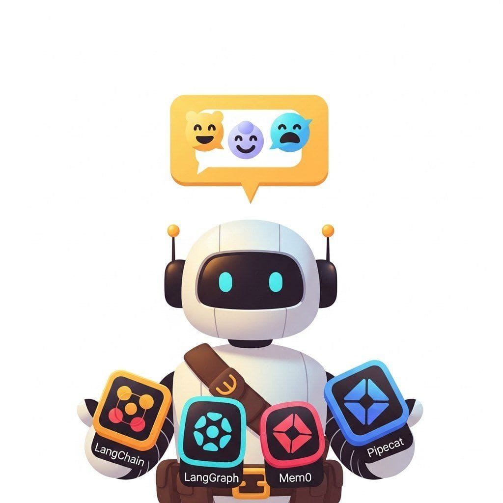

"A chatbot is 5 percent LLM and 95 percent integration."
Pip, Conversation-Stack-Building AI Agent
Chapters 37 and 40 designed conversational agents. This chapter surveys the conversational stack: Vapi, Retell, ElevenLabs, Pipecat, LiveKit, Voiceflow, Rasa, and the platform pieces that turn a working demo into a deployable product.
The conversational AI ecosystem has its own stack of platforms (Botpress, Rasa, Dialogflow), libraries (LangChain conversation memory, OpenAI Assistants, Anthropic prompts), datasets (PersonaChat, MultiWOZ), models, and communities. This chapter is the practical reference.
Chapter Overview
Part VIII covered conversational design, memory, voice agents, and the production realities of chat systems. This chapter consolidates the conversational AI toolchain: cloud studios (Dialogflow CX, Lex, Voiceflow), self-hosted stacks (Rasa, Botpress), voice-first runtimes (LiveKit, Pipecat, Vocode), character platforms, enterprise contact-center suites, the orchestration frameworks (LangGraph, OpenAI Assistants, LlamaIndex chat engines), chat UI toolkits (Chainlit, Vercel AI SDK), the canonical datasets (MultiWOZ, PersonaChat, MT-Bench, AlpacaEval, LMSYS Chatbot Arena, HarmBench), and the model selection grid for chat and voice.
Conversational AI tooling stabilized as voice and chat converged on shared runtimes. Use this chapter as the bookmarkable index whenever you choose a platform, library, dataset, or model for Part VIII work.
- Compare cloud conversational studios (Dialogflow CX, Lex, Voiceflow) with self-hosted stacks (Rasa, Botpress).
- Choose a voice-first runtime (LiveKit, Pipecat, Vocode) for a target deployment.
- Wire LangGraph, OpenAI Assistants, or LlamaIndex chat engines into a production assistant.
- Evaluate a chat system on MT-Bench, AlpacaEval, LMSYS Chatbot Arena, or HarmBench.
- Pick a chat model across closed APIs, voice-aware models, and open chat weights based on quality, latency, and openness.
Sections in This Chapter
Prerequisites
- Conversational AI from Chapter 37
- Voice and realtime from Chapter 39
- Python and JavaScript familiarity for the hands-on integrations
- 40.1 Platforms Cloud studios (Dialogflow CX, Lex, Voiceflow), self-hosted stacks (Rasa, Botpress), voice-first runtimes (LiveKit, Pipecat, Vocode), character platforms, and enterprise contact-center suites compared by team and channel.
- 40.2 Libraries and Frameworks Conversation memory primitives, orchestration frameworks (LangGraph, OpenAI Assistants, LlamaIndex chat engines), chat UI toolkits (Chainlit, Vercel AI SDK), and voice-agent runtimes for 2026.
- 40.3 Datasets and Benchmarks MultiWOZ, PersonaChat, BlendedSkillTalk, DSTC, MT-Bench, AlpacaEval, LMSYS Chatbot Arena, HarmBench, and the rest of the conversational AI evaluation stack.
- 40.4 Models Frontier chat APIs (Claude, GPT-4o, Gemini), voice-aware models (GPT-4o Realtime, Sonic, Moshi), open chat weights (Llama, Mistral, Qwen, DeepSeek), and persona models, picked by quality, latency, openness, and tuning style.
- 40.5 External Reading and Communities Jurafsky and Martin's dialogue chapter, foundational papers (InstructGPT, Constitutional AI), vendor engineering blogs, voice-agent Discords, ACL/EMNLP/DSTC venues, and curated paths into the field.
What's Next?
Next: Chapter 42: LLM Evaluation & Quality Metrics, opening Part IX. You have built models, agents, retrievers, and dialogue systems. Now the brutal question: how do you measure if any of it works? Part IX covers the eval stack from foundations (perplexity, BLEU, accuracy and their limits) up through LLM-as-judge ensembles, agentic trajectory eval, RAG faithfulness scoring, and production observability with OpenTelemetry. The shift is from building to measuring.